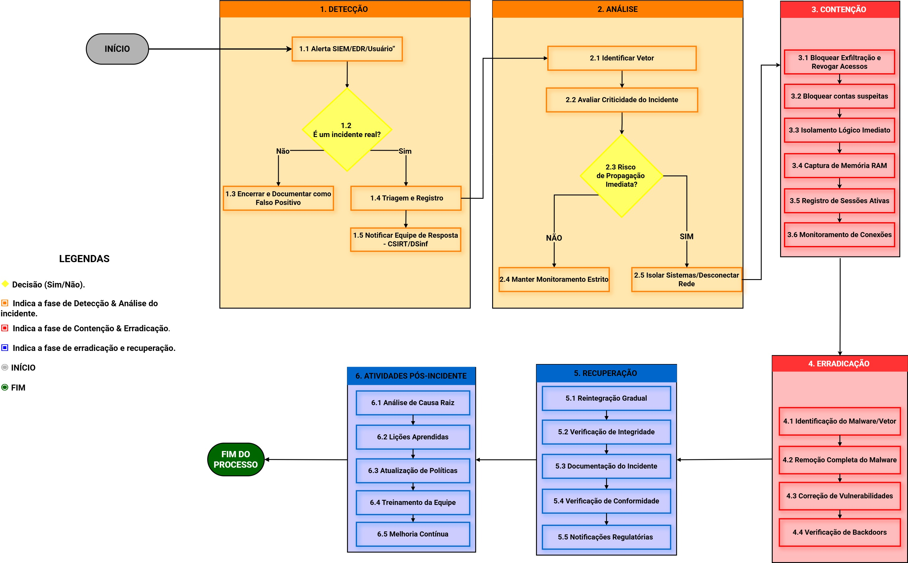

COMPROMETIMENTO DE INFORMAÇÃO
Baseado em NIST SP 800-61 Rev. 3
FLUXOGRAMA DE DECISÃO

Selecione uma das fases abaixo na barra de navegação para ver as instruções detalhadas.
DETECÇÃO (IDENTIFICAÇÃO)

Protocolo de Identificação
O objetivo é confirmar a ocorrência e coletar os primeiros sinais de comprometimento (IoCs).
- Identificação da Origem do Alerta
- Verificar se o alerta partiu do SIEM (Exfiltração), EDR (Acesso anômalo) ou reporte direto de usuário. Validar se não se trata de um falso positivo.
- Coleta de Evidências Voláteis CRÍTICO
- Antes de qualquer alteração no sistema, capturar logs de tráfego de rede e hashes de arquivos suspeitos para garantir a integridade da prova.
ANÁLISE (TRIAGEM)

Avaliação de Escopo e Impacto
Determinar a extensão do dano e as obrigações legais imediatas.
- Triagem de Dados (Decisão LGPD) ALTO
- Classificar os dados comprometidos. Se houver Dados Pessoais ou Sensíveis, o DPO deve ser notificado imediatamente para cumprir o prazo legal de 48h junto à ANPD.
- Determinação do Vetor e Extensão
- Analisar como o atacante entrou (ex: Credencial roubada, SQL Injection) e quantos registros/arquivos foram acessados ou exportados.
CONTENÇÃO

Interrupção da Exfiltração
O foco absoluto é impedir que mais dados saiam da rede da UFRGS.
- Bloqueio de Canal de Saída PRIORIDADE
- Aplicar regras de firewall para bloquear IPs de destino identificados na análise. Se necessário, isolar o host suspeito da rede externa mantendo a comunicação interna para investigação.
- Revogação de Credenciais
- Resetar senhas de contas comprometidas e revogar Tokens de API/Sessão ativos para impedir a persistência do acesso do atacante.
ERRADICAÇÃO (REMEDIAÇÃO)

Eliminação do Agente Invasor
Garantir que o ambiente esteja "limpo" antes de retomar as operações.
- Remoção de Backdoors e Persistência
- Identificar e remover scripts maliciosos, tarefas agendadas ou contas de sistema criadas pelo atacante para garantir acesso futuro.
- Sanitização de Vulnerabilidades
- Aplicar patches de segurança ou desativar serviços vulneráveis que foram explorados (ex: fechar portas inseguras ou corrigir código vulnerável).
RECUPERAÇÃO (RETORNO)

Validação e Conformidade
Retomar o serviço com monitoramento reforçado e atender às leis.
- Verificação de Integridade de Dados
- Auditar as bases de dados para garantir que não houve alteração maliciosa (ex: inserção de registros falsos ou alteração de privilégios).
- Comunicação e Notificação Regulatória LEGAL
- Formalizar as notificações para a ANPD e para os titulares dos dados, caso a análise de impacto tenha indicado risco aos direitos dos cidadãos.
PÓS-INCIDENTE (LIÇÕES)

Ciclo de Melhoria Contínua
O incidente só termina quando o aprendizado é institucionalizado.
- Relatório de Lições Aprendidas
- Reunião com a equipe técnica e gerencial para identificar falhas no processo de resposta e pontos de melhoria na infraestrutura.
- Atualização de Controles e Treinamento
- Ajustar regras do SIEM/IPS e promover treinamentos de conscientização com base no vetor real que causou o incidente.